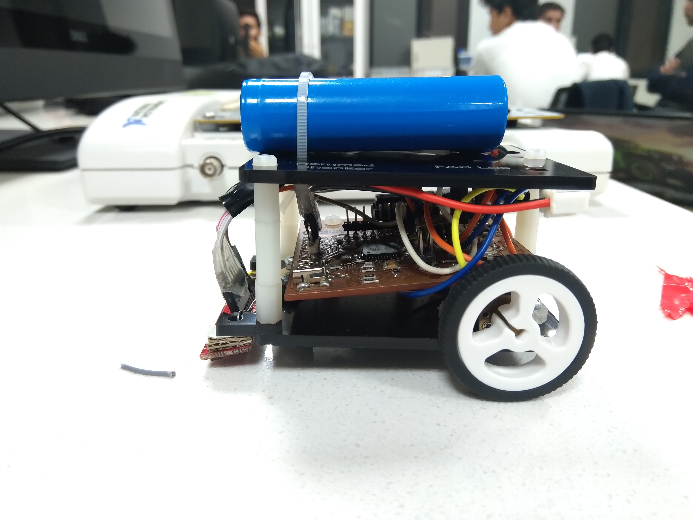
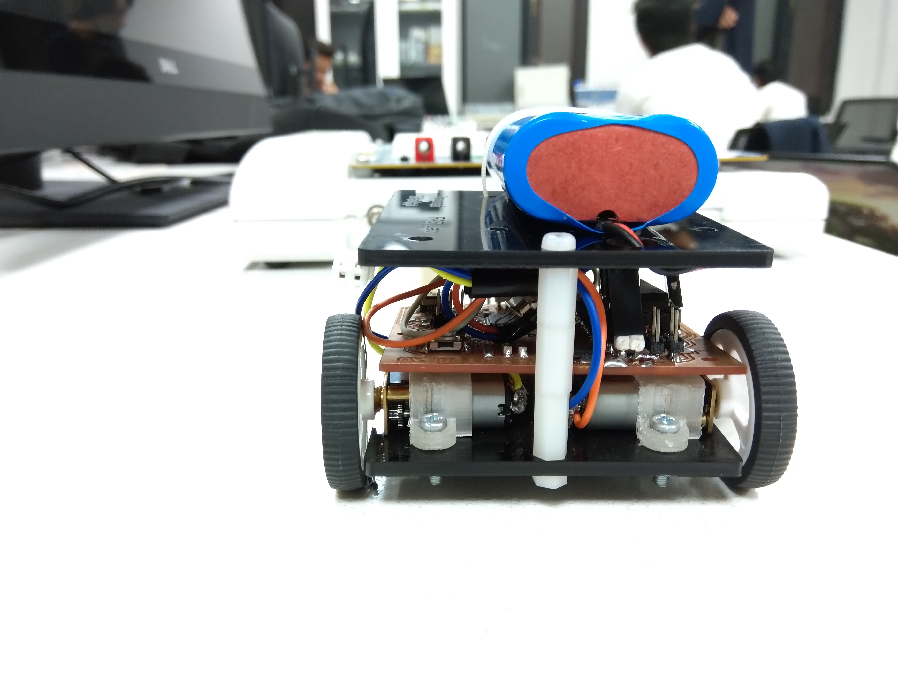
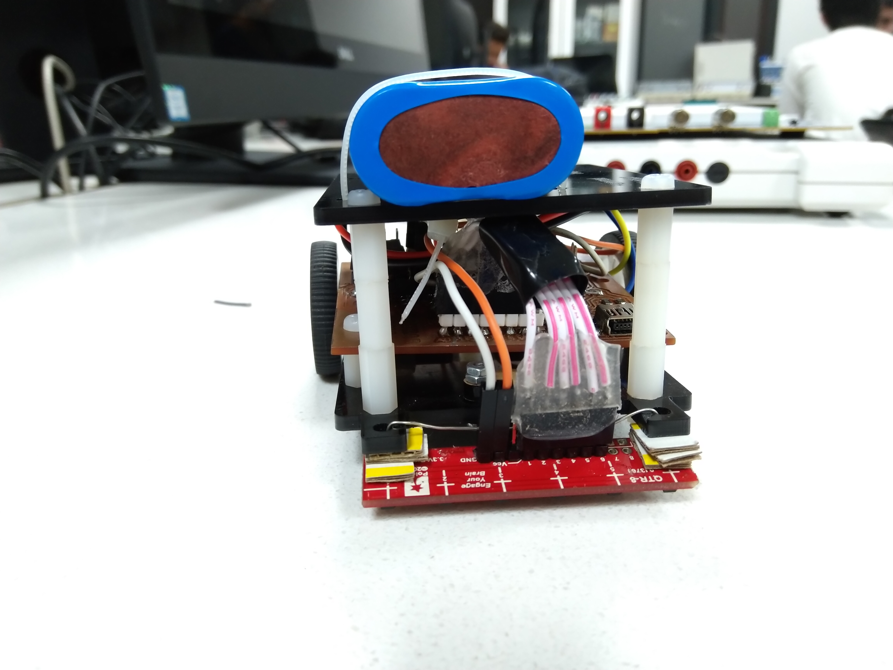
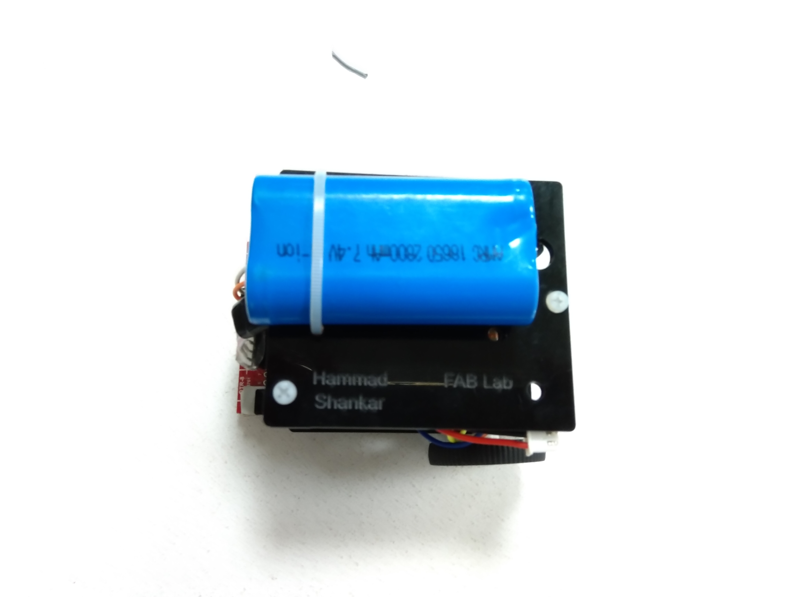
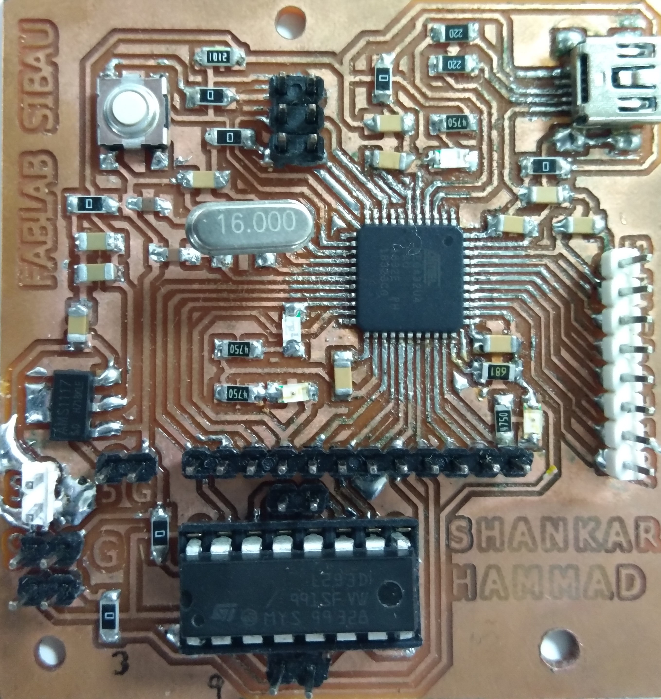
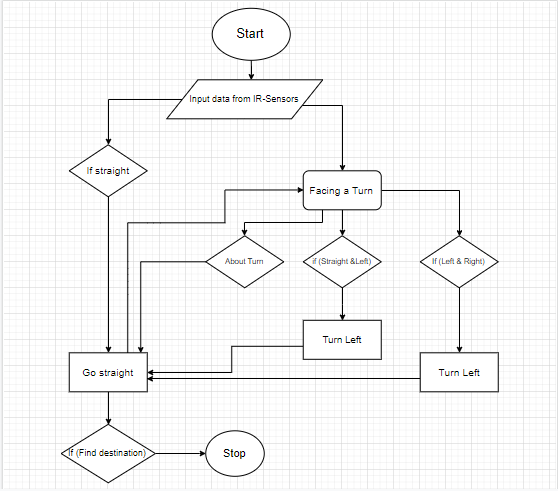
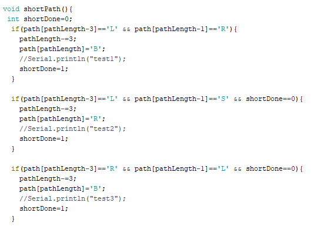
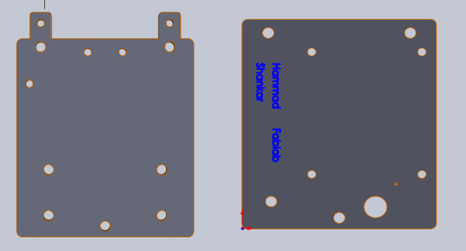
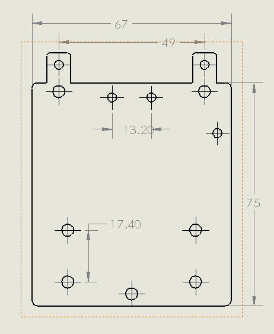

Hammad Ahmed Khan
Shankar Das
Maze Solving Robot




Introduction
Our robot works on two steps:The first is to drive through the maze and find the end of it. The second is to optimize that path so our robot can travel back through the maze, but do it perfectly without going towards any dead ends.
How does the robot find the end of the maze?
We have chosen a technique,i.e Left hand preferrence.When our robot finds multiple paths, it will go towards its left.
there are various possibilities of paths that our robot will face. If it faces a straight and left, it will chose left. If it faces a left and right, it will go the same. But if it will face a right and straight, it will go straight. A dead end will make our robot to turn around from its position and go backward to the turn.
L = left turn
R= right turn
S= going straight past a turn
B= turning around
So let us apply this method on the simple maze. View the photos to see this method in action.
The yellowish green will be the robot.
Look at the photos for the correct path means shortest path.
LBL=S;
LBS=R;
Final correct path=SRR;
After solving the path it will follow this shortest path
Our robot optimizes the path as it travels. The path is stored in an array and every time it goes to store a new move, it checks to see if the previous move was a "B", if it was then it optimizes the path. :
Machenical Design
High Level Design
Following is our high level block diagram which is self defined about how our machine's internal operations are being done.Description of Principle of Operations
I would like to start from IR-sensors which senses the black line through an array of six,horizontally alligned sensors. That signal is transmitted to our core-controlling body,the micro-controller which conveys orders to gear motors for either left or right turn or going straight,depends upon the path and the algorithym that we have burned in our micro-controller. Motors will go accordingly,for making a turn,one of the motors will stop moving and the machine will turn towards the side where motor is off.- The Micro-controller (ATmega 32u4)
- Motor Driver IC (L293D)
- 2 Micro Metal Gearmotors
- Analog Reflectance Sensor Array
- Pair of Wheels
- Ball Caster
- 7.4V Battery (Rechargeable)
- Complies fully with Universal Serial Bus Specification Rev 2.0
- Supports data transfer rates up to 12Mbit/s and 1.5Mbit/s
- Endpoint 0 for Control Transfers: up to 64-bytes
- Six Programmable Endpoints with IN or Out Directions and with Bulk, Interrupt or Isochronous Transfers
- Configurable Endpoints size up to 256 bytes in double bank mode
- Fully independent 832 bytes USB DPRAM for endpoint memory allocation
-
Program Memory Size 32 KB
-
SRAM 2,560 KB
-
Data EEPROM/HEF 1024 (bytes)
- We have added motor driver IC(L293D) which drives the two motors of the robot.
- Since we are using 7.4v battery for motor driver IC but the requirement of micro-controller is 5v that's why we have used 5v regulator IC which convert the 7.4v to 5v.
- We have given direct inputs in Motor driver IC from micro-controller by using 3,8,9,12 digital pins.
Choice of Components
Brief Description of Major Components
The Micro-controller (ATmega 32u4)
It has 44 I/O pins, following are the specifications.
L293D is a typical Motor driver or Motor Driver IC which allows DC motor to drive on either direction. L293D is a 16-pin IC which can control a set of two DC motors simultaneously in any direction. It means that you can control two DC motor with a single L293D IC
Analog Reflectance Sensor Array
This sensor module has 8 IR LED/phototransistor pairs mounted on a 0.375" pitch, making it a great detector for a line-following robot. Pairs of LEDs are arranged in series to halve current consumption, and a MOSFET allows the LEDs to be turned off for additional sensing or power-savings options. Each sensor provides a separate analog voltage output.
Connectivity to components (Protocol)
We have two gear motors, each have two connections,one of them is forward and the other one is reverse. That is why we are using four pins of Motor driver IC to connect with motors and four digital pins of micro-controller to connect with motor controller IC. According to our programming, we have declared variables(leftMotor1& rightMotor1) for forward pins of left motor and right motor respectively. Same is the case for backward pins. We have used four analog pins of micro-controller to recieve signals through IR-sensors. This is all we learnt throughout the making of this project.Blue wires is the forward pins of motors.
Design
Electrical Schmetic
Brief Description of Schematic
We have taken simple leonardo board from Sir Nadir Ali and we have did some amendments as per the requirement of our project.
PCB Layout
Challenges you faced in routing how you got around them
In the beginning we separately designed the pcb of motor controller IC(L293d) and leonardo board, but after concerning with our instructor and as our project need provokes us, we redesigned a single pcb having both traits(L293D and leonardo one). But in doing this, we faced the trouble of overlapping of routes which were solved by using zero ohm resistors.
We have also faced problem regarding making of the longer routes as in our project, our digital pins have a prolong connection with motor-controller IC which was solved by re-orienting the pins very nearest to the IC.
Bill of Material on taped on a Paper
Picture of Clean Printed Circuit Board
Picture of Populated Circuited Board

Procedure adopted to burn Bootloader
Following are the steps that one should follow when he/she is boot-loading their board.
Step #1
First connect both AVR-ISP and USB mini data cables with board.

Step #2
Open the arduino IDE and do as per the instruction given in the following pictures.

Step #3

Step #4

Finally the thing that we longed for was in our hands...A successfully bootloaded board.

Challenges you faced in Bootup and how you got around them
We did not face any challenge during boot-loading of our board.
Picture of successfully operating circuit

The Flow Code of our Software Design

Diagram outlining main Functions

Challenges we have faced in coding and how we got around them
First of all we have faced the declaration of variables that which variables is specific for forward and reverse pins of motors.
After that we have faced some issues in turning of the robot, we have controlled a smooth turning by changing the leap time(mentioned in the coding).
After troubleshooting and testing again and again finally we got the output.
CAD Design of Enclosure (Your design considerations)

CAD Design with Dimensions

Picture of the final design

Business model you can make with this product
Although our project is not going to help the community as this is a small prototype
of the bigger concept which is "obtaining the shortest path to the destination after passing
through several tangled and longer paths and returning through the simplest and the shortest one after acknowledgement".
Application of this concept is in the rescuing department which includes the ambulances and the fire extinguishers.
As discussed, ambulance will take several puzzled and long paths but after
fetching the patient it will take the most simple and shortest path to get them to hospitals.
Deligation of Tasks
Shankar Das
Hammad Ahmed
review of literature/datasheets
60%
40%
Selection of components
50%
50%
design of electrical circuit
and PCB Layout
60%
40%
Writing firmware
60%
40%
testing/debugging of
Hardware and Software
50%
50%
Design of Chasis
20%
80%
Intellectual Properties and Ethics Considerations
First of all we have Referred several sites but Instructables was most helpful in comparison to all. In that site they have discussed every minute aspect regarding the machine.
All those which were pre-requisites of our project,we have taken those from Instructables except the Printed Ciruit Board.
Cost of Project
Components
Cost (PKR)
2 Micro Metal Gearmotors
1000
QTR IR_Sensors
1550
Ball Causter
400
Chassis
700
Pair of Wheel
600
7.4V Lipo Battery
400
The Micro-controller (ATmega 32u4))
300
PCB bill of materials
400
Results
Firstly our robort solved the whole maze and after that it has follow the shortest path.
It is left path preference robot.
Procedure adopted to burn Bootloader
Following are the steps that one should follow when he/she is boot-loading their board.
Step #1
First connect both AVR-ISP and USB mini data cables with board.
Step #2
Open the arduino IDE and do as per the instruction given in the following pictures.
Step #3
Step #4
Finally the thing that we longed for was in our hands...A successfully bootloaded board.
Challenges you faced in Bootup and how you got around them
We did not face any challenge during boot-loading of our board.
Picture of successfully operating circuit
The Flow Code of our Software Design
Diagram outlining main Functions
Challenges we have faced in coding and how we got around them
First of all we have faced the declaration of variables that which variables is specific for forward and reverse pins of motors. After that we have faced some issues in turning of the robot, we have controlled a smooth turning by changing the leap time(mentioned in the coding). After troubleshooting and testing again and again finally we got the output.
CAD Design of Enclosure (Your design considerations)
CAD Design with Dimensions
Picture of the final design
Business model you can make with this product
Although our project is not going to help the community as this is a small prototype of the bigger concept which is "obtaining the shortest path to the destination after passing through several tangled and longer paths and returning through the simplest and the shortest one after acknowledgement".Application of this concept is in the rescuing department which includes the ambulances and the fire extinguishers. As discussed, ambulance will take several puzzled and long paths but after fetching the patient it will take the most simple and shortest path to get them to hospitals.
Deligation of Tasks
| Shankar Das | Hammad Ahmed | |
| review of literature/datasheets | 60% | 40% |
| Selection of components | 50% | 50% |
| design of electrical circuit and PCB Layout |
60% | 40% |
| Writing firmware | 60% | 40% |
| testing/debugging of Hardware and Software |
50% | 50% |
| Design of Chasis | 20% | 80% |
Intellectual Properties and Ethics Considerations
First of all we have Referred several sites but Instructables was most helpful in comparison to all. In that site they have discussed every minute aspect regarding the machine. All those which were pre-requisites of our project,we have taken those from Instructables except the Printed Ciruit Board.
Cost of Project
| Components | Cost (PKR) |
| 2 Micro Metal Gearmotors | 1000 |
| QTR IR_Sensors | 1550 |
| Ball Causter | 400 |
| Chassis | 700 |
| Pair of Wheel | 600 |
| 7.4V Lipo Battery | 400 |
| The Micro-controller (ATmega 32u4)) | 300 |
| PCB bill of materials | 400 |
Results
Firstly our robort solved the whole maze and after that it has follow the shortest path.
It is left path preference robot.
Reference you have used in to implement the project
https://www.instructables.com/id/Maze-Solving-Robot/
https://www.mouser.com/datasheet/2/268/7766s-1065155.pdf
https://www.elprocus.com/infrared-ir-sensor-circuit-and-working/
https://www.pololu.com/product/960
Appendix
Zip file containing source code
click here to download Arduino code
Zip file containing sch and brd files
click here to download Eagle file
Zip file containing cad files
click here to download Solid work file of Chassis